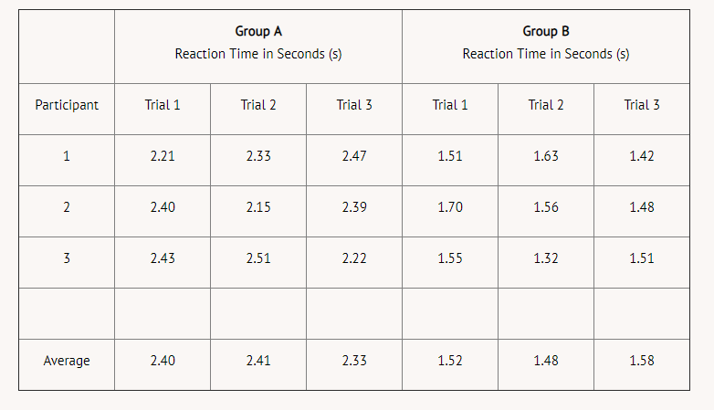
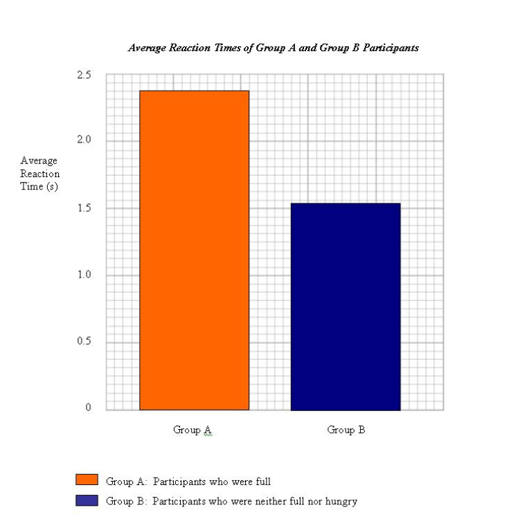

Researchers often organize their data in tables, charts, and graphs. Point-form written observations are also used regularly. In Module Two, you will learn how to organize and manipulate raw numerical data into deciles, means, and modes. In Module Three, you will learn about various ways to display data and how interpretation can be influenced by how data is displayed.
A typical data chart for our reaction time experiment could look like the following:

You may wish to use a bar graph to display the averages of Group A and Group B. See below for an example. Note that the axes are labelled, the display has a title, a key is provided, and appropriate units are used.
